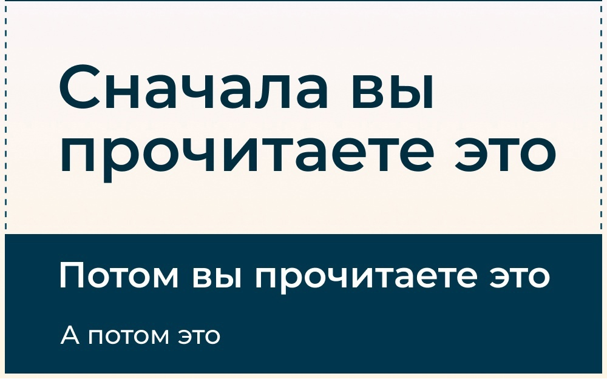
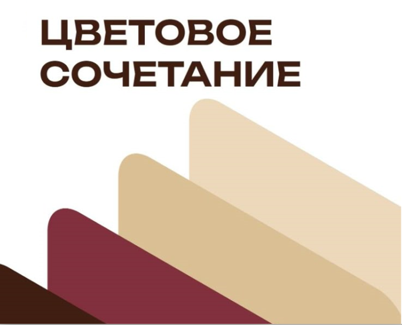
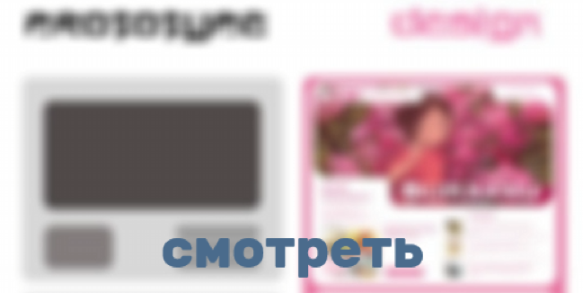

Секреты юзабилити:
как превратить посетителей в фанатов вашего сайта
Задумывались ли вы, почему одни сайты притягивают, как магнит,а другие отталкивают,заставляя посетителей бежать?
Ответ прост: юзабилити! Это не просто модное слово, а реальный инструмент, способный радикально изменить судьбу вашего онлайн-бизнеса. Представьте, что каждый клик на вашем сайте – это монета, которую либо зарабатываете, либо теряете. И зачастую, причиной этих потерь становится…
читать далее..Хочешь научиться создавать такие сайты?
Стань веб разработчиком!
Люберецкий техникум ждет именно тебя!
• научишься работать с базами данных
• изучишь несколько языков програмирования
• узнаешь о базовой структуре дизайна
три простых способа
улучшить дизайн


